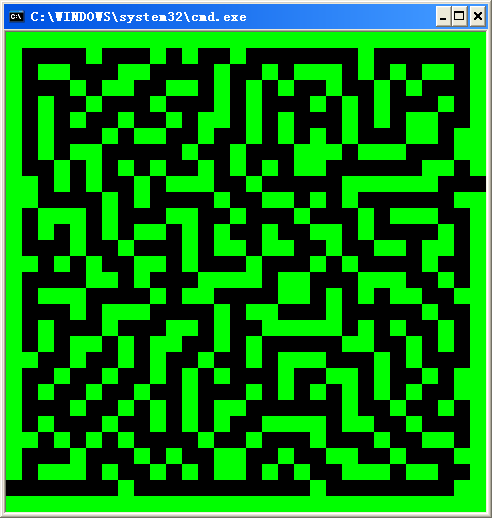
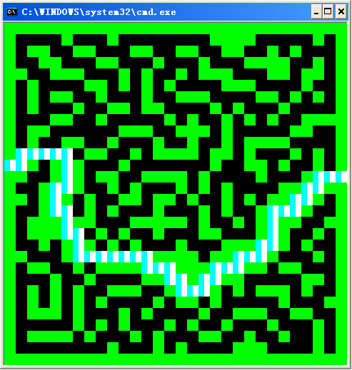

oMaze类
一个迷宫类，可以生成任意大小迷宫，并获得任意路径，效果如下：

/*可以获取任两点间最短路径（……忽然发现图上有恶趣味，看懂的请无视）*/

方法
void Generate(int length = 10, int iDifficulty = 100);
void SetEntrance(oBorder whichBorder);
void SetExit(oBorder whichBorder);
void GetPath(const oPoint& begin, const oPoint& end, vector<oPoint>& ThePath);